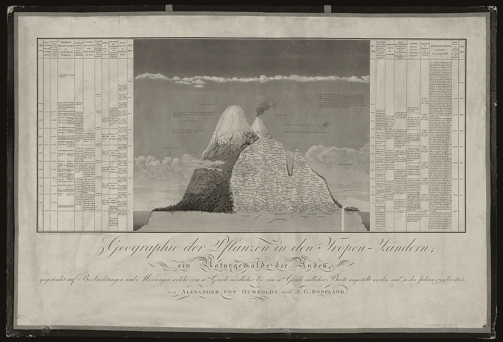

· Edición 62 · 4 min de lectura
El mundo roza 1,5 °C; Colombia perdió 91% de su área glaciar

El mundo roza 1,5 °C; Colombia perdió 91% de su área glaciar
Ver todo el tema, de principio a fin →
En pocas palabras. En lo que va de 2026, el planeta está 1,47 °C más caliente que antes de la industria, y en 2025, el año que la ONU dedicó a conservar los glaciares, estos perdieron más de 400.000 millones de toneladas de hielo, según la OMM. A Colombia le queda menos de una décima parte del área glaciar del siglo XIX, y el Ideam, el instituto del clima, prevé que sus seis glaciares desaparezcan o queden muy reducidos en la segunda mitad del siglo. Cuánto hielo sobrevive depende de cada décima de grado, y eso se discute desde hoy en la cumbre del clima de Antalya.
El dato curioso. El 23 de junio de 1802, Alexander von Humboldt intentó subir el Chimborazo, en Ecuador. Anotó dónde crecía cada planta y dónde empezaba la nieve, y en 1807 lo dibujó en la lámina de esta edición. En 2012, científicos de la Universidad de Aarhus repitieron sus mediciones: el límite de las plantas había subido de unos 4.600 a casi 5.200 metros, tras el hielo que se retiraba.
Qué está cambiando. En 2024, tras 25 años midiendo los glaciares de Colombia, Jorge Luis Ceballos, entonces el único glaciólogo del Ideam, le dijo a El Tiempo: «Me estoy quedando sin trabajo».
Este año, el Ideam confirmó la extinción del glaciar de los Cerros de la Plaza, en El Cocuy: tenía 5,5 kilómetros cuadrados en el siglo XIX y 0,15 en 2016. Hoy, cero. Y, según Semana, el Ideam reporta que la cima del Santa Isabel ya es roca.
Fuente: Ideam: indicador de área glaciar 2024, informe de 2020 y SIAC
Ver datos
| km² | |
|---|---|
| Siglo XIX | 347,9 |
| 2019 | 36,1 |
| 2022 | 33,1 |
| 2024 | 30,83 |
Lo que cambia en 10 a 50 años: Colombia se volvería un país sin glaciares, como Venezuela. El Ideam prevé que el Santa Isabel se extinga antes de 2030.
Por qué.
- Más calor. Cae menos nieve y se derrite más hielo, según el Ideam.
- El Niño. Puede multiplicar el deshielo hasta 2,4 veces, según el Ideam, y la OMM prevé que el actual llegue a su pico, muy fuerte, en diciembre.
Qué significa para Colombia.
- El agua. Los glaciares dan poca agua frente a los páramos y la lluvia, pero sostienen ríos de alta montaña en época seca. (Conocimiento general.)
- Un termómetro que se apaga. Ceballos los llama el mejor indicador natural del cambio climático.
Quién se está preparando. Colombia cuida lo que queda debajo del hielo: la Ley 1930 de 2018 prohibió la minería en los páramos, que guardan el agua de la montaña.
En Venezuela, en diciembre de 2023 llegaron 35 rollos de manta térmica para su último glaciar, el Humboldt. En mayo de 2024 lo reclasificaron como campo de hielo: medía menos de dos hectáreas. La cobija llegó tarde.
La salida de fondo es emitir menos: en 2025, por primera vez, las renovables dieron más electricidad que el carbón en el mundo, según el centro de análisis Ember.
Y cada décima cuenta: con 1,5 °C sobreviviría algo más de la mitad del hielo glaciar del mundo; con 2,7 °C, el rumbo actual, una cuarta parte, según un estudio de Science de 2025.
Pero ojo.
- Parte ya es segura. Aun sin más calentamiento, los glaciares perderían 39 de cada 100 toneladas de hielo, según ese estudio.
- 1,47 no es 1,5. El dato va de enero a septiembre; el umbral de París se mide en promedios de años. (Conocimiento general.)
Lo que ya habíamos contado. El 28 de octubre contamos cuántas muertes por calor causa el cambio climático (ver esa edición). Hoy, su huella en la montaña.
Qué hacer con esto
Para ir pensando. Quien quiera conocer un glaciar colombiano no tiene todo el tiempo del mundo: el Ideam le da al Santa Isabel de tres a cinco años.
Cómo prepararse. Nada urgente; conviene vigilar El Niño, que según la OMM traerá más calor y sequía hasta comienzos de 2027.
Ojo con el cuento. «Este año hizo frío en mi ciudad.» Un mes o un lugar no cambian la serie; los glaciares, que suman décadas de clima, sí la muestran.
Dos lecturas
Las dos posturas sobre el tema, en su mejor versión
Proteger lo que queda. Mantas, vigilancia y límites a las visitas pueden ganar años en glaciares pequeños, y cada año sirve para estudiar y para que los ríos de alta montaña se adapten.
Aceptar la pérdida y cuidar lo de abajo. El hielo tropical ya no se salva. El dinero rinde más en los páramos y en recortar emisiones, que sí cambian lo que viene.
Quién decide y cuándo
Quién decide. Los países de la ONU, en la COP31. Aquí, el Ministerio de Ambiente delimita los páramos y el Ideam vigila los glaciares.
Cuándo. La COP31 va del 9 al 20 de noviembre.
Cómo participar. La delimitación de un páramo debe hacerse con las comunidades, como ordenó la Corte Constitucional en 2017. (Conocimiento general.)
Seguimiento de la decisión
Pendiente · plazo:
Los países de la Convención Marco de las Naciones Unidas sobre el Cambio Climático, reunidos en la COP31, en Antalya (Turquía): Adoptar las decisiones de cierre de la cumbre del clima, en un año en que, según el Programa de la ONU para el Medio Ambiente, los compromisos de reducción de emisiones no alcanzan para limitar el calentamiento a 1,5 °C sin pasarse.
La COP31 va del 9 al 20 de noviembre de 2026. El 20 es el cierre programado; estas cumbres suelen alargarse uno o dos días.
La paradoja del día
Lo más absurdo de la edición, en dos líneas
Colombia tiene un parque nacional que se llama Los Nevados, y la cima de su Santa Isabel ya es de roca. Todo indica que el nombre va a durar más que la nieve.
Para conversar
La pregunta. Si cada décima de grado decide cuánto hielo queda, ¿qué cambiaría usted por una décima menos?
Para leer más
Libros para seguir con el tema
La invención de la naturaleza. El nuevo mundo de Alexander von Humboldt, de Andrea Wulf (Taurus, 2016; traducción de María Luisa Rodríguez Tapia). La vida del hombre que dibujó el Chimborazo y que entendió la naturaleza como una red en la que tocar una parte cambia el todo.
Cambio de clima. Un ensayo gráfico (y autobiográfico) sobre el cambio climático, de Philippe Squarzoni (Errata Naturae, 2022; traducción de Elena Pérez San Miguel). Un cómic largo, con entrevistas a científicos, para entender qué se sabe del calentamiento y qué falta por decidir. Disponible en Santo & Seña
¿Le interesa ver las fuentes?
Todos los documentos y datos que usamos
32 fuentes: 2 académicas, 8 oficiales, 2 de datos, 4 de organizaciones, 12 de prensa, 4 de referencia.
- Oficial Organización Meteorológica Mundial (OMM), comunicado (9 de noviembre de 2026). State of the climate in 2026 gives new meaning to phrase «off the charts»
- Oficial Organización Meteorológica Mundial (OMM). State of the Climate Update for COP31
- Organización Scimex, con el comunicado de la OMM (9 de noviembre de 2026). 2026 set to be one of the 4 hottest years on record
- Prensa The Irish Times (9 de noviembre de 2026). Climate extremes «off the charts» as countries gather for Cop31 summit
- Prensa Dawn, sobre el informe de brecha de emisiones del PNUMA (octubre de 2026). World on track to dangerous warming, says UN
- Datos World Glacier Monitoring Service (WGMS). Global glacier mass change in 2025
- Datos Ideam. Glaciares en Colombia, área y cobertura glaciar (indicador 2024)
- Oficial Ideam. Informe del estado de los glaciares colombianos 2020
- Oficial Ideam, Sistema de Información Ambiental de Colombia (SIAC). Glaciares
- Oficial Ideam, sala de prensa. Colombia está perdiendo sus glaciares: solo quedan 33 km²
- Prensa El Espectador (2026). Colombia perdió otro glaciar: Ideam confirma la desaparición del de Los Cerros de la Plaza
- Prensa Noticias Caracol (2026). Impactantes imágenes de cómo desapareció glaciar Los Cerros de la Plaza, en Sierra Nevada El Cocuy
- Prensa La República, con el Reporte N.º 1 del Ideam (2026). Nevado Santa Isabel se redujo 27% en 2025, será el próximo glaciar en desaparecer
- Prensa Semana, con el Reporte N.º 2 del Ideam (octubre de 2026). Preocupante alerta del Ideam sobre inminente extinción del nevado Santa Isabel: la cima ya no es de nieve
- Prensa RTVC Noticias (2026). El fenómeno de El Niño aceleraría hasta 2,4 veces el deshielo de los glaciares colombianos
- Prensa El Tiempo (30 de septiembre de 2024). Los glaciares en Colombia están condenados a desaparecer: el hielo en los picos nevados no es ni la décima parte de lo que era
- Académica Zekollari y otros, Science (29 de mayo de 2025), estudio con ocho modelos de glaciares. Glacier preservation doubled by limiting warming to 1.5°C versus 2.7°C
- Organización Vrije Universiteit Brussel (mayo de 2025), sobre el estudio de Science. Substantial global glacier loss unavoidable, but strong climate policies will make a difference
- Prensa AccuWeather, con UPI (mayo de 2024). Venezuela becomes first country to lose all of its glaciers
- Prensa El Diario (22 de febrero de 2024). En qué consiste el plan que se lleva a cabo en Venezuela para retrasar el derretimiento de su último glaciar
- Prensa Efecto Cocuyo. «La desaparición del último glaciar de Venezuela es un espejo de lo que pasará en Colombia y Ecuador»
- Oficial Asamblea General de las Naciones Unidas, resolución 77/158 (14 de diciembre de 2022). International Year of Glaciers' Preservation, 2025
- Organización Ember, Global Electricity Review 2026, según Statista e Intellinews. Renewables overtake coal in global electricity mix
- Prensa Down To Earth, sobre el informe de Ember (2026). Clean energy meets entire global demand growth as renewables overtake coal: Ember report
- Oficial Ministerio de Ambiente y Desarrollo Sostenible. Ley 1930 de 2018, por medio de la cual se dictan disposiciones para la gestión integral de los páramos en Colombia
- Oficial Cancillería de Colombia (27 de octubre de 2026). Colombia y Türkiye intercambian perspectivas de cara a la COP31
- Académica Morueta-Holme y otros, PNAS (2015), comparación con los registros de Humboldt de 1802. Strong upslope shifts in Chimborazo's vegetation over two centuries since Humboldt
- Organización EurekAlert, comunicado de la Universidad de Aarhus (septiembre de 2015). Upslope migration of tropical plants due to climate change
- Referencia Universidad de Berna, edición digital de las obras de Humboldt. Ueber zwei Versuche den Gipfel des Chimborazo zu ersteigen (1837)
- Referencia Marcial Pons (ficha del libro). Cambio de clima, de Philippe Squarzoni (Errata Naturae)
- Referencia Santo & Seña (ficha del libro). Cambio de clima. Un ensayo gráfico (y autobiográfico) sobre el cambio climático
- Referencia Lecturalia (ficha del libro). La invención de la naturaleza, de Andrea Wulf
Glosario
Las palabras técnicas, explicadas
- Glaciar: masa de hielo que se forma con la nieve acumulada durante años y que se mueve lentamente por su peso.
- Campo de hielo: hielo que queda cuando un glaciar es tan pequeño que ya no se mueve como tal.
- Área glaciar: la superficie que cubren los glaciares, medida desde satélites y en el terreno.
- Antes de la industria (era preindustrial): el periodo de 1850 a 1900, que se usa como punto de partida para medir el calentamiento.
- 1,5 °C: el límite de calentamiento que buscan los países en el Acuerdo de París de 2015.
- Páramo: ecosistema de alta montaña, entre el bosque y el hielo, que guarda y regula el agua.
- El Niño: calentamiento del océano Pacífico que cada pocos años trae a Colombia más calor y menos lluvia.
- COP31: la cumbre anual de la ONU sobre el cambio climático, este año en Antalya (Turquía).
Nota metodológica
Cómo se hizo esta edición y qué no pudimos verificar
El horizonte. ¿Cambia el rumbo de cómo vive la gente, en Colombia o en el mundo, dentro de 10 a 50 años? Sí. En ese plazo el planeta muy probablemente vivirá por encima de 1,5 °C, y Colombia dejará de tener glaciares. La evidencia es la serie del Ideam (de unos 348 kilómetros cuadrados en el siglo XIX a 30,83 en 2024), su proyección para el Santa Isabel y para los seis glaciares, la serie de temperatura de la OMM y la proyección del estudio de Science de 2025 para cada nivel de calentamiento.
Entra por la puerta del cambio de fondo: serie larga y proyecciones; un canal concreto con Colombia (sus glaciares, sus páramos, El Niño); y algo que se decide ahora (la COP31, hasta el 20 de noviembre). La puerta de entrada es el informe de la OMM publicado hoy, primer día de la cumbre. No es una pieza sobre la cumbre: es el dato que la enmarca. Es también un tema del mundo y de ciencia. Revisamos el archivo: los glaciares solo aparecieron entre los descartes del 5 y el 6 de noviembre, sin hecho nuevo, y nunca habíamos tratado el umbral de 1,5 °C. Lo enlazamos con la edición sobre el calor del 28 de octubre, que trató el cambio climático desde la salud.
Puntaje. De 1 a 3 en cada criterio; peso en la vida y horizonte valen doble (máximo 24). Solo entra un tema con horizonte 3.
| Tema | Puerta | ¿Cambia el rumbo en 10 a 50 años? | Alcance | Peso | Horizonte | Cercanía | Margen | Mirada | Total | Resultado |
|---|---|---|---|---|---|---|---|---|---|---|
| El mundo roza 1,5 °C y los glaciares de Colombia (mundo y Colombia) | fondo | Sí: un planeta por encima de 1,5 °C y un país sin glaciares | 3 | 2 | 3 | 3 | 2 | 2 | 20 | Elegido (edición 62) |
| Desplazamiento por el clima (Ley 2577) | fondo | Sí: quién tendrá que mudarse y con qué protección | 2 | 3 | 3 | 3 | 2 | 3 | 22 | Sin hecho nuevo |
| Fracking y nuevos contratos petroleros | fondo | Sí: de qué vivirá y con qué energía se moverá el país | 3 | 2 | 3 | 3 | 2 | 1 | 20 | Tratado en septiembre y octubre; va como actualización |
| Brecha de emisiones (PNUMA, 21 de octubre) | fondo | Sí: 1,5 °C sin pasarse ya no se alcanza | 3 | 3 | 3 | 2 | 1 | 1 | 19 | De hace tres semanas; su dato entra como contexto |
| Natalidad en Colombia | fondo | Sí: el tamaño y la edad del país | 3 | 2 | 3 | 3 | 1 | 1 | 18 | Sin dato nuevo |
| Centros de datos de inteligencia artificial con gas | fondo | Sí: la energía de la próxima infraestructura | 3 | 2 | 3 | 1 | 1 | 2 | 17 | No pudimos verificar la noticia |
| El Niño de fuerza récord (OMM) | fondo | No: es un episodio de uno o dos años | 3 | 3 | 2 | 3 | 2 | 1 | 19 | No pasa el horizonte |
| Inactividad física de los adolescentes | fondo | No: un hábito estable, no una transformación en curso | 3 | 2 | 2 | 2 | 1 | 2 | 16 | No pasa el horizonte |
En el tema elegido, el peso vale 2: en Colombia los glaciares dan poca agua frente a los páramos, y lo que se pierde es sobre todo un regulador de la alta montaña y un registro del clima. El alcance vale 3 porque el calentamiento toca a todos; el margen, 2, porque hay una cumbre con fecha pero ninguna decisión colombiana con plazo. El desplazamiento por el clima tiene más puntaje, pero no tiene un hecho reciente que lo reactive, que es condición para entrar; lo retomaremos cuando venzan los criterios técnicos. El fracking empata, pero ya lo contamos hace seis semanas. Ningún otro tema llega a 19 con un hecho nuevo y sin chocar con uno reciente, así que hoy hay una sola edición. Es lunes y la semana empieza con un cambio de fondo.
Hicimos unas 50 búsquedas en español, inglés y alemán. No pudimos abrir los documentos completos, tampoco el informe de la OMM ni los reportes del Ideam sobre el Santa Isabel; trabajamos con resúmenes, comunicados y resultados de búsqueda. De 32 fuentes, 20 no son de prensa.
Quedó sin verificar o con límites:
- El 1,47 °C y los más de 400.000 millones de toneladas (400 gigatoneladas) son del comunicado de la OMM de hoy; el servicio mundial de glaciares los calcula en 408, con un margen de 132.
- El área del siglo XIX es de 347,9 kilómetros cuadrados según el indicador del Ideam de 2024; otros documentos del mismo instituto dan 349, 350 o 374. El dato de 2022 (33,1) es del SIAC; el de 2019, del informe de 2020.
- La medida del Santa Isabel cambia según el medio: varios coinciden en que perdió 27% de su superficie entre enero de 2025 y enero de 2026, pero no en los metros cuadrados, así que no usamos cifras de su área. El plazo de tres a cinco años es del Ideam, según La República; su ficha del SIAC dice «antes de 2030». Que la cima ya es roca viene del Reporte N.º 2 del Ideam, según Semana; no leímos el reporte.
- La fecha de la confirmación de los Cerros de la Plaza varía: unos medios dicen marzo y otros abril de 2026.
- En el estudio de Science, el resumen dice 53% de hielo conservado con 1,5 °C, y el comunicado de la universidad, 54%; por eso escribimos «algo más de la mitad». Son cifras de largo plazo, cuando los glaciares se estabilizan, no para una fecha.
- La cita de Ceballos es de una entrevista de septiembre de 2024.
- La altura que alcanzó Humboldt en 1802 es discutida; no la usamos.
- La manta térmica de Venezuela: sabemos que los rollos llegaron en diciembre de 2023 y que hubo críticas de ambientalistas; no encontramos cuánto de ella se instaló.
El grabado es la lámina de la «Geografía de las plantas» de Humboldt y Bonpland, de 1807, en la edición alemana que conserva la Biblioteca Central de Zúrich, tomada de Wikimedia Commons. Muestra el Chimborazo con su nieve y, detrás, el Cotopaxi echando humo. La elegimos porque fue uno de los primeros dibujos que marcaron dónde empezaba el hielo en los Andes. La bajamos al primer intento.
Los libros: Cambio de clima está en Santo & Seña (revisamos su ficha: dice «Añadir al carrito»); el de Andrea Wulf no, y va sin enlace. Autores, editoriales y traductores los tomamos de las fichas de Marcial Pons y Lecturalia. Para el de Wulf, las fichas dan 2015 o 2016 como año de la edición en español; usamos 2016, el más citado.